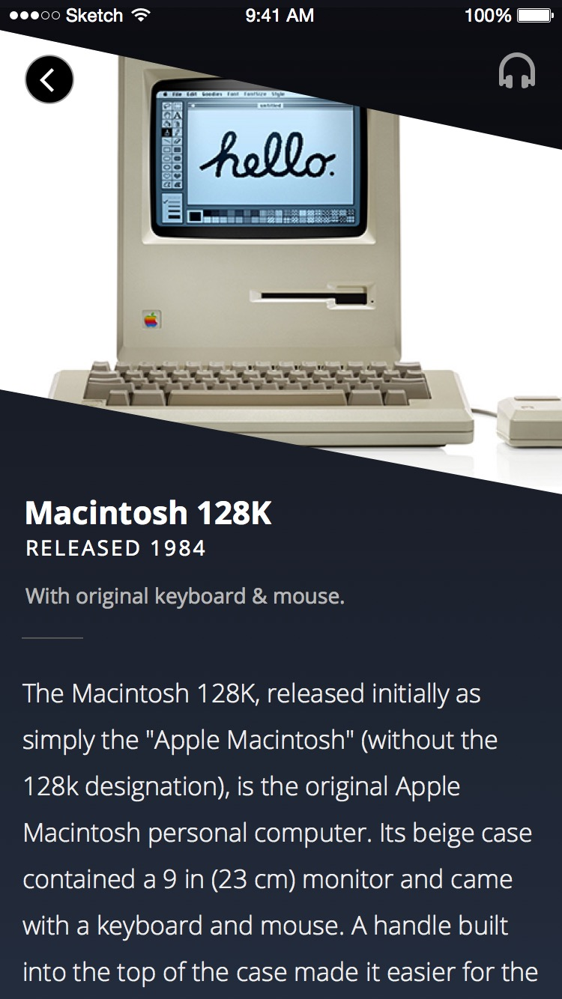
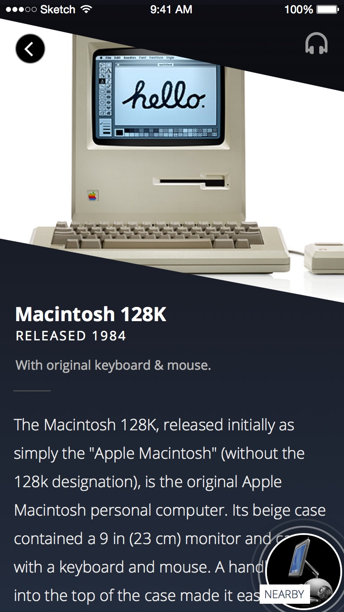
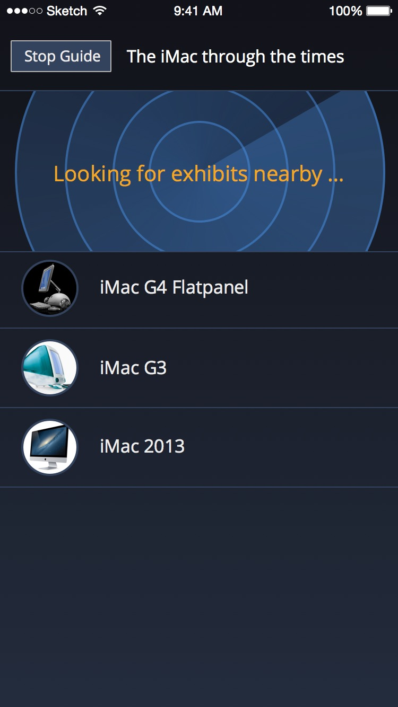

ExhibitGuide
iOS Project @ buUuk
"Truly Mobile Audio Guides"
Created with the purpose of enhancing the feature of existing audio tour systems, ExhibitGuide is an iOS app I worked on while at buUuk, which utilizes iBeacons to track and feed exhibit data to the user’s phones.
With proximity information gathered from the iBeacons, this app allowed me to look into displaying relevant UI based on the user’s real-world context.